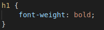
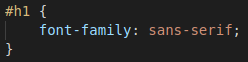
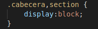

Una manera de crear una regla de CSS es con el selector del propio nombre de una etiqueta. De esta manera, se cambian todas las etiquetas con ese nombre. Por ejemplo:
Otra manera de crear una regla de CSS es seleccionando una etiqueta mediante una id. Este identificador tiene que ser único y se introduce con un #. Por ejemplo:
Esta regla de CSS sirve para seleccionar varias etiquetas a diferencia del selector por id. Esta regla se introduce con un ".". Por ejemplo:
